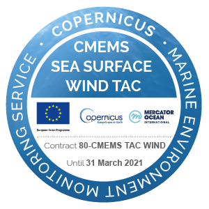

Heading level 1
Heading level 2
Heading level 3
This information is required to facilitate analysis of the progress indicators for strategic objectives 1 and 2.
About footnotes
Land area
Information relating to land area is required over several years to calculate the proportion of land covered by each land cover class (SO1-1) and the proportion of land that is degraded over total land area (Sustainable Development Goal indicator 15.3.1). This information is also useful to investigate possible climate impacts, which could be potentially identified by the reduction in size of permanent water bodies, the disappearance of permanent water bodies and the loss of coastline.
Total land area, water body area and total country area require respective estimates to be reported in km2 for the corresponding year. Land area data is pre-filled in the reporting template. The pre-filled data is editable and thus can be adjusted if these estimates have changed. Any changes are to be justified in the ‘Comments’ column.
Countries should ensure that data on land area is consistent with data on land cover and on the proportion of land that is degraded.
Demographics
Demographics are required over several years to estimate the proportion of population below the international poverty line (SO2-1) and proportion of population using safely managed drinking water services (SO2-2). Information relating to population is also useful to ascertain how much pressure the increases in population are having on land capital in both rural and urban areas.
Population estimates should be reported in thousand inhabitants. Population estimates can be accessed from website of the United Nations, Department of Economic and Social Affairs, Population Division2 and/or from the World Bank website.3
Countries should ensure that data on demographics is consistent with data on poverty and drinking water
Complementary information
Population datasets that have been further disaggregated (by labor force, age, male/female) are available from the World Bank. This disaggregated data may assist in the interpretation of population dynamics and potential population pressures. Any additional disaggregated data should also be uploaded to the PRAIS.
Images


Basic formatting
Use double asterisks for bold text. It also works with double underscores. Use single asterisks or underscores for italic text. Use three asterisks for really important text.
Underline text may work using the HTML <ins> tag.
Same for strikethrough using the {strike} or {del} annotation.
Or use this other way to add ~~strikethrough~~ text.
Superscript text and subscript text can be produced using the {sup} and {sub} annotations, respectively.
Quoted text
Blockquotes can contain multiple paragraphs. Add a > even on the blank lines between the paragraphs.
Dorothy followed her through many of the beautiful rooms in her castle.
The Witch bade her clean the pots and kettles and sweep the floor and keep the fire fed with wood. Blockquotes can contain formatting such as bold text or lists:
item 1
item 2
Example 2:
Indenting text with 4 spaces or a tab shows the text as a code block.
The text can span across multiple lines.
Numbered lists
Lines starting with numbers followed by periods are converted to numbered lists. You don’t have to number each item manually, you can use number one for all items:
First item
Second item
Third item
Boxes
Nota
This is a default note, without any arguments.
Blue title
This is a note, but in a different way
Orange title
This is a warning
Red title
This is an error
Green title
This is a note
Definition lists
To use definition lists and other formatting supported by ReStructuredText, use the {eval-rst} directive.
- Term 1
Definition
- Term 2
Definition paragraph 1. Definition paragraph 2.
- Term 3
Definition paragraph A.
Definition paragraph B.
Definition lists - provided by deflist plugin
See myst_enable_extensions in conf.py.
- Term 1
Definition
- Term 2
Definition
Math formulas
\(x_{base}=it+is^{pow}\)
Or, using the $ sign (provided by the dollarmath plugin): \(x_{base}=it+is^{pow}\)
Tables (Markdown style)
Column 1 |
Column 2 |
|---|---|
Header |
Title |
Paragraph |
Text |
Grid table (allows colspan and rowspan)
Header 1 |
Header 2 |
Header 3 |
|---|---|---|
body row 1 |
column 2 |
column 3 |
body row 2 |
Cells may span columns. |
|
body row 3 |
Cells may span rows. |
|
body row 4 |
||
Tables (myst-parser style)
Heading row 1, column 1 |
Heading row 1, column 2 |
Heading row 1, column 3 |
|---|---|---|
Row 1, column 1 |
Row 1, column 3 |
|
Row 2, column 1 |
Row 2, column 2 |
Row 2, column 3 |
Tables (RST style)
Heading row 1, column 1 |
Heading row 1, column 2 |
Heading row 1, column 3 |
|---|---|---|
Row 1, column 1 |
Row 1, column 3 |
|
Row 2, column 1 |
Row 2, column 2 |
Row 2, column 3 |
IPCC Class |
Forest Land |
Grassland |
Cropland |
Wetlands |
Settlements |
Other Land |
|---|---|---|---|---|---|---|
Forest Land |
Stable |
Vegetation loss |
Deforestation |
Innundation |
Deforestation |
Vegetation loss |
Grassland |
Aforestation |
Stable |
Agricultural expansion |
Innundation |
Urban expansion |
Vegetation loss |
Cropland |
Aforestation |
Withdrawal of Agriculture |
Stable |
Innundation |
Urban expansion |
Vegetation loss |
Wetlands |
Woody Encroachment |
Wetland drainage |
Wetland drainage |
Stable |
Wetland drainage |
Wetland drainage |
Settlements |
Aforestation |
Vegetation establishment |
Agricultural expansion |
Wetland establishment |
Stable |
Withdrawal of Settlments |
Other Land |
Aforestation |
Vegetation establishment |
Agricultural expansion |
Wetland establishment |
Urban expansion |
Stable |
Treat |
Quantity |
Description |
|---|---|---|
Albatross |
2.99 |
On a stick! |
Popcorn |
1.99 |
Straight from the oven |
Tables (flat-table plugin)
Indicator code |
Indicator name |
Metrics / proxies |
Adopted / proposed |
Reporting attribution |
|
|---|---|---|---|---|---|
Affected country Parties |
Developed country Parties |
||||
SO 1-1 |
Trends in land cover |
Land cover change |
Indicator adopted in decision 7/COP.13 |
X |
Indicators under SO 1 and SDG indicator 15.3.1 are optional for reporting by developed country Parties. Developed country Parties may wish to submit information on these indicators on a voluntary basis for the purpose of reporting on progress towards the SDGs |
SO 1-2 |
Trends in land productivity or functioning of the land |
Land productivity dynamics |
Indicator adopted in decision 7/COP.13 |
X |
|
SO 1-3 |
Trends in carbon stocks above and below ground |
Soil organic carbon stock |
Indicator adopted in decision 7/COP.13 |
X |
|
SO 1-4 |
Proportion of land that is degraded over total land area |
— |
Background for indicator adopted in decision 9/COP.13 |
X |
|
Links
This is a link to https://www.markdownguide.org.
HTML is also supported: Hello, world!.
Translated texts
End of sample text